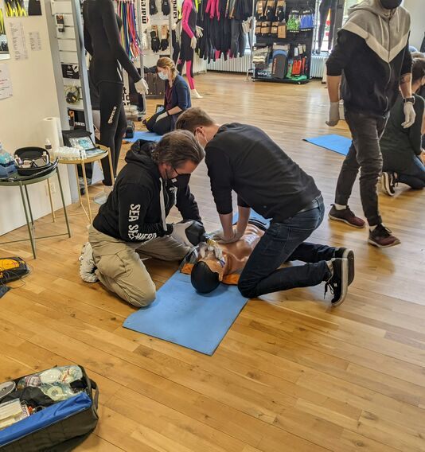
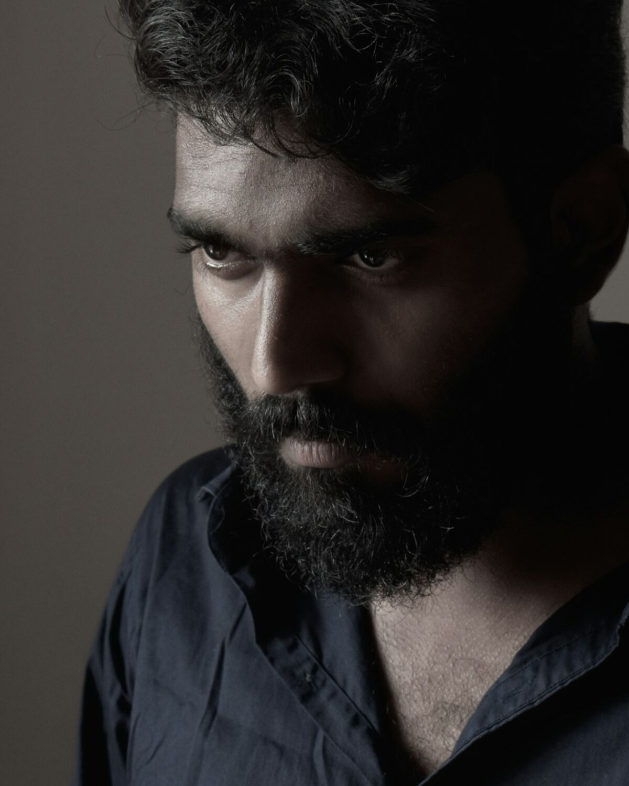

Northwatch Safety' Experts Have Decades of Life-Saving Experience.
We've trained operators, assessed vulnerabilities, and made the decisions that matter.



Our multidisciplinary team has seen it, planned for it, and responded to it. We translate that real-world experience into training that saves lives.
Cole Brennan spent nearly twenty years in law enforcement, serving in patrol, investigations and a regional tactical unit before becoming a lead instructor at his department’s training academy. Along the way he studied hundreds of after-action reports from critical incidents and saw how often well-written plans broke down when people had never practiced them.
That experience led him to found Northwatch Safety, with a simple goal: give ordinary people the confidence and the decision-making skills to act when it matters most. Today he leads the company’s curriculum and speaks to schools, businesses and faith communities across the country.

Ryan Castellano served twenty years in the United States Army, the majority of them in special operations units, where he specialized in mission planning, intelligence and security assessments.
After retiring from the Army, Ryan joined Northwatch Safety to lead operations, overseeing training logistics, vulnerability assessments and the company’s growing team of instructors.
He brings a calm, methodical approach to every assessment and a talent for turning complex findings into clear, prioritized recommendations.
Ryan lives in Central Ohio with his wife and three children.
Lauren joined Northwatch Safety in 2024 to lead marketing and communications. She first met the team as a training participant at a previous employer and was struck by how practical and empowering the course was.
Before joining Northwatch, Lauren managed communications for a regional healthcare nonprofit, where she led campaigns on community health and preparedness.
She holds a bachelor’s degree in communications and lives in Columbus with her husband.
Erin joined Northwatch Safety in 2023 and leads the company’s auxiliary programs, including emergency operations planning and follow-up support for schools.
She previously served as risk manager for a large independent school, where she built its emergency planning program and coordinated drills for more than a thousand students and staff.
Erin holds a bachelor’s degree in emergency management.
She lives in the Columbus area with her family and two dogs.

Dr. Natalie Ford is a board-certified emergency physician at a regional medical center and serves as an EMS medical director for several local agencies.
She reviews every Northwatch medical course to keep it aligned with current trauma care guidelines and regularly teaches alongside the team.

Travis Monroe has served in law enforcement since 2009 with a large metropolitan department, working patrol and proactive units before moving to the training academy.
As an academy instructor he has taught firearms, defensive tactics and active shooter response to hundreds of recruits and in-service officers.
Travis brings a focus on clear communication and practical skills to every Northwatch course.
Kyle Benson is a nationally registered paramedic with a busy fire and EMS department, where he serves on the special operations team.
He is also a critical care paramedic and EMS educator, and teaches bleeding control and trauma response for Northwatch.
Outside work, Kyle is an avid trail runner.

Nate Carver supervises the tactical team for a large police department and has nearly twenty years of service.
He is also a licensed EMT and has taught tactical and medical courses to officers across the region.
Nate holds multiple instructor certifications in firearms, less-lethal options and tactical medicine.
He holds a bachelor’s degree in criminal justice and is a U.S. Marine Corps veteran.
Derek Sloan serves with a metropolitan police tactical team as an operator and tactical medic, and has been with his department for more than twenty years.
He is a certified advanced EMT and a nationally certified instructor in tactical emergency casualty care.
Derek holds a bachelor’s degree in criminal justice and lives in Central Ohio with his wife and three daughters.

Paul Whitaker is a trauma outreach educator and program manager at a regional Level I trauma center.
He has worked in EMS for more than thirty years, including technical rescue and disaster response.
Today he teaches trauma and disaster courses for hospitals and first responders across the region.
Paul holds a bachelor’s degree in emergency medical care and a master’s degree in disaster preparedness.
Omar Haddad has served as a police officer with a large metropolitan department since 2014 and is now a full-time academy instructor.
Before joining law enforcement, he served as a U.S. Army medic on active duty and in the Reserve.
He brings that military medical experience to every Northwatch medical course he teaches.
Omar lives in Columbus with his wife, two children and two dogs.

Greg Lindqvist serves as director of security at a private K–12 school, where he oversees daily safety operations and emergency planning.
He retired after a decade with a metropolitan police department, where he served as a tactical medic.
Greg also served in the U.S. Army Reserve as a medical and leadership instructor.
He holds a bachelor’s degree in criminology and has been a licensed EMT for many years.
Morgan Ellis has served with a metropolitan police department since 2020 and is assigned to its training academy as a lead medical instructor.
Before joining the department, Morgan worked as a registered nurse and holds a Bachelor of Science in Nursing.
Caleb Ward is an officer with a large metropolitan police department and serves full-time on its tactical team.
He has worked patrol, investigations and tactical assignments since 2013 and teaches tactics and medical skills to fellow officers.
Before law enforcement, Caleb served in the U.S. Army as an infantryman.
He lives in Central Ohio with his wife, two children and their dog.
Tyler Hensley serves with a metropolitan police tactical team as an operator and tactical medic, and joined his department in 2008.
He is a certified EMT and a nationally certified tactical emergency casualty care instructor who has taught hundreds of students.
Tyler holds a bachelor’s degree in sociology with a minor in criminal justice.

Luis Montoya brings years of real-life medical experience to the Northwatch medical training team, beginning with his service as a U.S. Army combat medic.
Today he works as a flight paramedic and tactical medic, and teaches emergency care courses throughout the region.
Luis holds national paramedic and critical care certifications.
Your safety awaits. Have questions about our services? Ask away!
Stop planning and start training. We'll show you how.